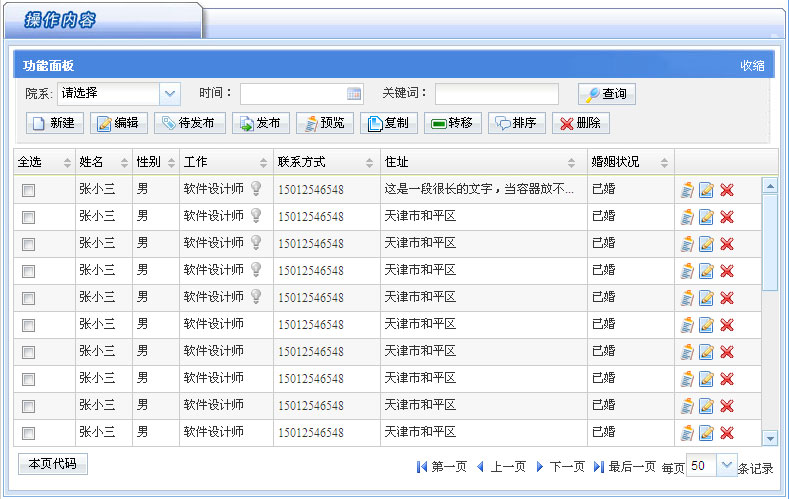

第一行非常重要，很多开发者以为头部是一个网址经常会去掉，其实那是xml namespace的声明，作用是告诉IE浏览器以标准模式解析页面的css和脚本。如果去掉了90%以上的效果都不会正常显示。
下方的4段引用是让框架的核心部分。
你可能注意到最后一个css引用没有写href属性，其实该href属性所指向的路径被隐藏起来了，由JS控制，为了每次内页加载时会读取主框架的皮肤配置。
该路径默认会使用
"../"来寻找根目录。这是因为框架的所有内页所在的lesson目录属于二级目录。
有时会遇到使用
"../"无法找到根目录的情况，例如下面的几种情况：
1、有的工程中二级目录需要通过
"./"才能找到根目录
2、该页不在二级目录下而在第三、四级目录，
3、工程中无法使用相对路径
这时需要为其添加一个prePath属性，该属性值就是从当前页寻找根目录的路径。例如下面是该页在三级目录的情况：
如果是JAVA工程，那么可以用通用的得到根目录的做法。代码如下：
框架
右侧内页的body里必须有一对id="scrollContent"的div标签，所有“滚动内容”都放在这里。代码如下：
什么是“滚动内容”呢？这是相对于“固定内容”来说的，见下图：

上图的这种需求是：上方是一个查询区域，中间是数据列表，下方是分页区域。正常情况下如果列表过多所有内容都会随滚动条滚动，这对于查询和分页都很不方便，所以想让头、尾固定，只让数据列表区域滚动。
那么数据列表就是“滚动内容”，查询和分页是“固定内容”。
要实现这种布局，则将列表代码放在id="scrollContent"的div标签中，而查询放在该div标签的上方，分页放在id="scrollContent"的div下方。另外，查询和分页都要以div为容器。见下面代码
id="scrollContent"的div的上下都可放置多个div容器，但要注意，如果固定内容某个元素没有以div为容器则会不可见，如下面代码
则里面的文本框和提交按钮都会不可见。
除了右侧内页本身，在右侧内页嵌入的iframe子页或通过浮动面板（关于浮动面板请参看“提示与弹窗>>浮动面板”）都可以用这种代码结构，只是不具备“固定内容”的特性。
但如果是弹出窗口（关于弹出窗口请参看“提示与弹窗>>弹出窗口”）嵌入的页面，则结构会稍有不同。见下面。
如果该页是弹出窗口引入的iframe页，则不要有id="scrollContent"的div，代码结构如下
左侧内页结构与右侧内页结构基本相同，唯一的区别是
需要在body标签中加入leftFrame="true"，代码结构如下
在“UU人”网页界面集成框架ver2.0正式版中，有4个主目录。各目录说明如下：
frame：框架使用手册和所有模板、皮肤等所在目录，用于查阅和拷贝模板
bin：部署到工程中的版本，是frame的精简版，保留了使用框架所需的必要文件。
split：框架中组件和特效的分离版本。如果只需要使用框架的某一项或几项组件或特效时，可以从该目录中查找使用。注意不要与集成框架混用。
source：框架的未压缩脚本和psd设计源文件。
pages：存放展示框架时涉及的网页和皮肤预览图。
要将本框架应用到工程中，首先复制一份框架的bin目录作为工程目录。
bin目录中主页只保留了“抽屉型导航”，风格只保留了sky皮肤包。可以从frame目录中选择其他结构和皮肤包拷贝到bin目录。
当需要使用完整模板时，可以从frame目录中的templete目录中拷贝。当需要使用组件或特效时，可以打开使用手册（frame目录中的main.html）进行查阅。
frame目录中其他各目录说明如下：
charts：flash图表文件。框架非必要组成部分。
css：整个框架的css库，框架必要组成部分。
flash：几个可能会用到的flash和flash播放器。框架非必要组成部分。
icons：整个框架的图标库，框架必要组成部分。
images：框架中各皮肤公共的图片资源。里面的demo目录是框架非必要组成部分。
js：整个框架的脚本库，框架必要组成部分。
leftPages：各结构模板的导航部分和换肤文件。框架非必要组成部分。
lesson：使用手册用到的所有文件。框架非必要组成部分。
login：登录页的皮肤文件，除当前用到的皮肤包，其余为框架非必要组成部分。
skins：框架主页的皮肤文件，除当前用到的皮肤包，其余为框架非必要组成部分。
templete：结构模板用到的所有模板页面。框架非必要组成部分。
如果希望页面初始化后执行某个脚本的方法，不能在body上使用onload或代码中使用window.onload=xxx，因为onload事件对于某些浏览器只能使用一次，这个事件已经被框架里代码占用了，如果再使用在某些浏览器是不会生效的。
需要使用jQuery库中的onload替代的方法：$("document").ready，这种方式可以使用多次。见下面代码：
或者用简写
框架中的css/framework中的各css始终不能被修改，skins目录的各个皮肤目录中的style.css也不要轻易修改。
如果要自定义css或使用第三方css可以放在skins/custom.css中，因为无论哪个风格的皮肤默认都会引入custom.css。
另外不建议在custom.css中定义颜色、背景图等内容，因为可能当前这套风格看起来没问题，将来换了一种风格就不见得搭配了。
IE6默认是不支持半透明png图片的，框架中有一些页面使用了supersleight.js来实现让IE6支持png图片。例如lesson/open.html、templete/open.html和templete/toolBox.html等。在静态页面中没有问题，但如果放在服务器端访问则会在IE6中会产生问题（原因是无法正确找到路径）。这时要将其改为.jsp格式（或其他服务器语言格式）。
以上三个文件的jsp页面在同目录下已存在，直接使用即可。